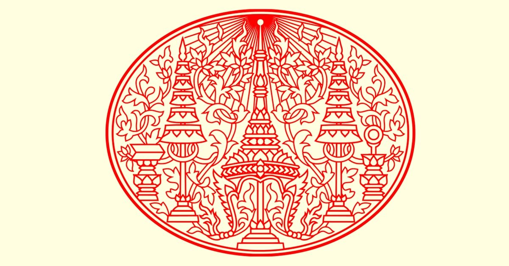

ประวัติศาสตร์ไทย สมัยราชวงศ์จักรี
รัชกาลที่ 4

พระราชประวัติ
พระบาทสมเด็จพระจอมเกล้าเจ้าอยู่หัว เป็นพระราชโอรส ในพระบาทสมเด็จพระพุทธเลิศหล้านภาลัย กับสมเด็จพระศรีสุริเยนทรา บรมราชินี ประสูติเมื่อวันพฤหัสบดีที่ 18 ตุลาคม พ.ศ. 2347 ตรงกับปีชวด มีพระนามเดิมว่า เจ้าฟ้ามหามาลา ขณะนั้นพระราชบิดายังดัารงพระยศเป็นเจ้าฟ้ากรมหลวงอิศรสุนทร เมื่อทรงพระเยาว์ได้ทรงศึกษาอักขะสมัยกับสมเด็จพระพุทธโฆษาจารย์ เมื่อพระชนมายุได้ 9 พรรษา ได้รับสถาปนาเป็นเจ้าฟ้ามงกุฎ มีพระราชอนุชาร่วมพระราชมารดา คือ เจ้าฟ้าจุธามณี ซึ่งต่อมาได้รับสถาปนาเป็น พระบาทสมเด็จพระปิ่นเกล้าเจ้าอยู่หัว
เมื่อพระชนมายุได้ 9 พรรษา สมเด็จพระบรมชนกนาถก็โปรดให้มีการพระราชพิธีลงสรง ( พ.ศ. 2355 ) เป็นครั้งแรกที่กระทําขึ้นในกรุงรัตนโกสินทร์ ได้รับพระราชทานนามจารึกในพระสุพรรณปัฎว่า " สมเด็จพระเจ้าลูกยาเธอเจ้าฟ้ามงกุฎสมมุติเทววงศ์พงศ์อิสรค์กษัตริย์ ขัตติยราชกุมาร " สมเด็จเจ้าฟ้ามงกุฎฯ ได้เสด็จขึ้นครองราชย์เมื่อวันที่ 4 เมษายน พุทธศักราช 2394 ทรงพระนามว่า "พระบาทสมเด็จพระจอมเกล้าเจ้าอยู่หัว" เรียกขานในหมู่ชาวต่างชาติว่า "คิงส์มงกุฎ" ขณะที่พระองค์ขึ้นเสวย สิริราชย์สมบัตินั้น พระชนมายุ 37 พรรษา
เมื่อได้เสด็จขึ้นครองราชย์แล้วทรงโปรดเกล้าฯ สถาปนาสมเด็จพระเจ้าน้องยาเธอเจ้าฟ้ากรมขุนอิศเรศรังสรรค์ ( พระนามเดิมเจ้าฟ้าจุธามณีโอรสองค์ที่ 50 ของรัชกาลสมเด็จพระพุทธเลิศหล้านภาลัย ) ขึ้นเป็นสมเด็จพระปิ่นเกล้าเจ้าอยู่หัว ทรงมีฐานะเสมือนพระเจ้าแผ่นดินอีกพระองค์หนึ่ง
การทํานุบํารุงบ้านเมือง
การปกครอง ในรัชกาลนี้ ได้มีการปฎิรูปการปกครองเฉพาะในด้านประเพณีที่มีมาแต่เดิมๆ อย่างเช่น ปรับปรุงประเพณีการเข้าเฝ้า มีพระบรมราชโองการให้ทุกคนสวมเสื้อเข้าเฝ้า โปรดให้ราษฎรเข้าเฝ้าอย่างใกล้ชิด และถวายฎีการ้องทุกข์ทุกวันโกนเดือนละ 4 ครั้ง โดยพระองค์ท่านจะเสด็จออกมารับการร้องทุกข์นั้น
กฎหมาย มีกฎหมายที่ออกในรัชกาลนี้มาก มีทั้งกฎหมายอาญาหลวง และมีประกาศเพื่อให้เกิดความสงบเรียบร้อยของประชาชน
ศาล ยังมิได้มีการรวบรวมเป็นกระทรวงเดียวกัน แต่โปรดให้ตั้งศาลต่างประเทศระหว่างคนไทยกับต่างประเทศ และให้เกิดมีศาลกงศุลขึ้นเป็นครั้งแรก
ทหาร โปรดให้มีการฝึกหัดทหารแบบยุโรป โดยจ้าง "ร้อยเอกอิมเปย์" นายทหารนอกราชการของกองทัพบกอังกฤษ ประจําประเทศอินเดียมาเป็นครูฝึก พ.ศ. 2394 ได้จัดกองทหารประจําพระองค์ออกเป็น 2 กอง คือ "กองทหารรักษาพระองค์" ปืนปลายหอกข้าหลวงเดิม และ "กองทหารหน้า"
ทหารเรือ มีการสร้างเรือชนิดที่ใช้เครื่องจักรกลขึ้น และทรงตั้งกรมเรือกลไฟ
ตำรวจ มีตํารวจพระนครบาลขึ้นครั้งแรกเมื่อ พ.ศ. 2404 การตัดถนนและขุดคลอง โปรดให้สร้างถนนขึ้นเป็นครั้งแรกเมื่อ พ.ศ. 2404 ถนนเจริญกรุงเป็นสายแรก
การขุดคลอง มีการขุดคลอง เช่น คลองผดุงกรุงเกษม คลองภาษีเจริญ และคลองดําเนินสะดวก
ศาสนา พระราชกรณียกิจที่สําคัญในการทํานุบํารุงพุทธศาสนา คือ ทรงให้กําเนิดธรรมยุติกนิกาย มีการสร้างพระอารามหลวง มี 5 พระอารามได้แก่ วัดบรมนิวาส วัดโสมนัสวิหาร วัดประทุมวนาราม วัดราชประดิษฐ์สถิตย์มหาสีมาราม วัดมกุฎกษัตริยาราม
พระราชนิพนธ์ที่สําคัญ
1. ร่ายยาวมหาเวสสันดรชาดก
2. บทระบํา
3. บทละครเรื่องรามเกียรติ์
4. บทเบิกโรงละครหลวง
5. โคลงพระราชทานพร
6. จารึกวัดราชประดิษฐ์
7. ชุมนุมพระบรมราชาธิบาย หมวดภาษา และวรรณคดี
กวีในรัชสมัย เช่น พระยาอิศรานุภาพ หม่อมราโชทัย คุณสุวรรณ
ศิลปกรรม
สถาปัตยกรรม ส่วนใหญ่เป็นแบบตะวันตก เช่น พระราชวังสราญรมย์ จิตรกรรม มีปรากฎอยู่ในพระอุโบสถ และพระวิหารวัดบวรนิเวศน์ ปฎิมากรรม มีการหล่อพระพุทธรูป
การศึกษา โปรดจ้างแหม่มเลียวโนเวนส์ มาจากสิงคโปร์ เป็นครูสอนภาษาอังกฤษ ให้พระบรมวงศานุวงศ์ ขุนนาง และพระราชโอรสพระราชธิดา ด้วยทรงเห็นว่าจะเป็นประโยชน์ต่อไปภายหน้า
การติดต่อกับต่างประเทศ
ในรัชกาลนี้ มีการติดต่อกับต่างประเทศอย่างกว้างขวาง มีการทําสนธิสัญญากับนานาประเทศ เริ่มด้วยรัฐบาลอังกฤษได้ส่ง เซอร์ จอห์น เบาว์ริง เจ้าเมืองฮ่องกงในขณะนั้นเป็นอัครราชทูต อัญเชิญพระราชสาส์นของสมเด็จพระนางเจ้าวิคตอเรีย พร้อมด้วยเครื่องบรรณาการเข้ามาขอเจรจาทําสนธิสัญญาทางไมตรีมาทางเรือรบ สนธิสัญญาที่ทําขึ้นมีผลที่สําคัญบังเกิดขึ้นคือ ก่อให้เกิดสิทธิภาพนอกอาณาเขต และอนุญาตให้คนในบังคับอังกฤษสามารถถือกรรมสิทธิ์ที่ดินในประเทศไทย
การทูตของไทย พ.ศ. 2400 พระองค์ทรงโปรดให้พระยามนตรีสุริยวงศ์ ( ชุ่ม ) เป็นอัครราชทูต อัญเชิญพระราชสาส์นและเครื่องราชบรรณาการไปถวายสมเด็จพระนางเจ้าวิคตอเรีย ณ ประเทศอังกฤษ
ไทยเสียเขมร ต่อเนื่องมาจากฝรั่งเศสครองญวนได้แล้ว จึงมาบังคับเขมรโดยอ้างว่าเขมรเคยเป็นเมืองขึ้นของญวนมาก่อน สมเด็จพระนโรดมกษัตริย์ของเขมร ขณะนั้น ยินยอมทําสัญญาลับยอมอยู่ภายใต้การปกครองของฝรั่งเศส เมื่อวันที่ 11 สิงหาคม 2406 และได้ส่งหนังสือมากราบบังคมทูลว่า ที่ยอมฝั่งเศสนั้นเพราะถูกบังคับ และต่อมา วันที่ 15 กรกฎาคม 2410 ไทยได้ลงนามในสนธิสัญญายกกัมพูชาให้ฝรั่งเศส
การติดต่อกับต่างประเทศ
ศึกเมืองเชียงตุงการตีเมืองเชียงตุงนี้ ค้างมาตั้งแต่ปลายรัชกาล ที่ 3 แต่ตีไม่สําเร็จ
การติดต่อกับญวน ในรัชกาลที่ 3 ญวนสนับสนุนให้เจ้าอนุวงศ์แห่งเวียงจันทน์เป็นกบฎต่อไทย เท่ากับแสดงตนเป็นอริกับไทย ไทยจึงคิดปราบปรามญวนให้หายกําเริบเสียบ้าง จึงโปรดให้เจ้าพระยาบดินทร์เดชา ( สิงห์ สิงหเสนีย์ ) เป็นแม่ทัพบก ยกไปไล่ญวนในประเทศเขมร จนจดไซ่ง่อน และให้เจ้าพระยาพระคลังเป็นแม่ทัพเรือ ตีหัวเมืองเขมรและญวนแถบชายทะเล ทําสงครามอยู่นานในที่สุดได้เลิกสงครามกัน พระบาทสมเด็จพระเจ้าอยู่หัว ทรงโปรดให้นักองค์อิน เป็นเจ้าเมืองพระตะบอง และให้นักองค์ด้วงไปครองเมืองมงคลบุรี
เสด็จสวรรคต
พ.ศ. 2411 พระองค์ทรงเสด็จไปทอดพระเนตรสุริยุปราคา ที่ตําบลหว้ากอจังหวัดประจวบคีรีขันธ์ตามที่พระองค์ทรงทํานายเอาไว้ว่า จะเกิดในวันขึ้น 1 คํ่า เดือน 10 พ.ศ. 2411 หลังจากที่กลับมาแล้วก็ทรงประชวรหนัก และได้เสด็จสวรรคต เมื่อวันที่ 17 พฤศจิกายน พุทธศักราช 2411 พระชนมายุได้ 65 พรรษา เสวยราชสมบัติได้ 17 ปี มีพระราชโอรส และพระราชธิดา รวมทั้งสิ้น 82 พระองค์
พระราชลัญจกรประจำรัชกาลที่ ๔
เป็นรูปพระมหาพิชัยมงกุฎ ในกรอบรูปกลมรี เป็นพระราช สัญลักษณ์ของพระบรมนามาภิไธย ว่า "มงกุฎ" มีฉัตรตั้ง ขนาบพระ มหาพิชัยมงกุฎทั้งสองข้าง มีพาน ทองสองชั้น วางแว่นสุริยกาลหรือ เพชรข้างหนึ่ง วางสมุดตำราข้างหนึ่ง พระแว่นสุริยกาลหรือเพชร มาจาก ฉายาเมื่อทรงผนวชว่า "วชิรญาณ" ส่วนสมุดตำรามาจากการที่ได้ทรง ศึกษาและ มีความเชี่ยวชาญในด้าน อักษรศาสตร์และดาราศาสตร์
พระราชลัญจกรประจำรัชกาลที่ ๔